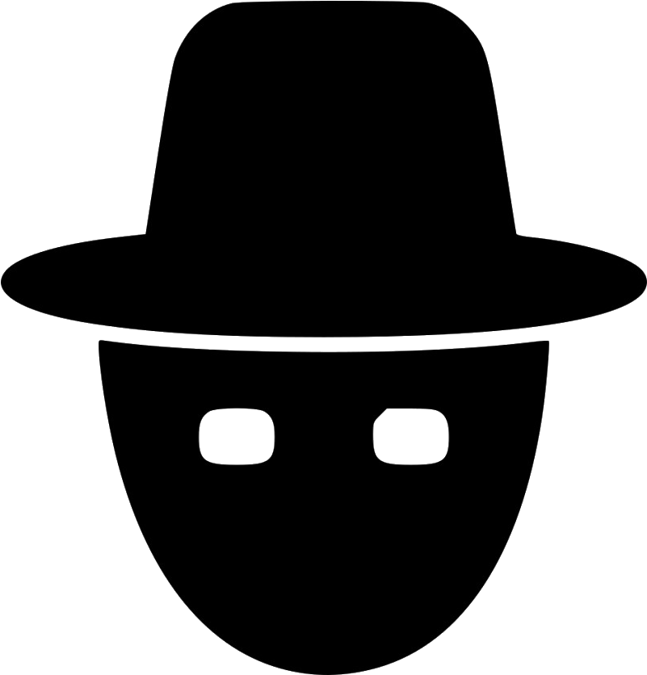

Heroes Of The Computer Revolution
Kevin Mitnick:
-
Source: https://grupobcc.com/en/speakers/kevin-mitnick/ Personal Information:
Kevin David Mitnick (born August 6, 1963) is an American computer security consultant, author, and convicted hacker. He is best known for his high-profile 1995 arrest and five years in prison for various computer and communications-related crimes.
Mitnick's pursuit, arrest, trial, and sentence along with the associated journalism, books, and films were all controversial.
He now runs the security firm Mitnick Security Consulting, LLC. He is also the Chief Hacking Officer and part owner of the security awareness training company KnowBe4, as well as an active advisory board member at Zimperium, a firm that develops a mobile intrusion prevention system.
Hacking History:
At age 12, Mitnick got a bus driver to tell him where he could buy his own ticket punch for "a school project", and was then able to ride any bus in the greater LA area using unused transfer slips he found in a dumpster next to the bus company garage.
Mitnick first gained unauthorized access to a computer network in 1979, at 16, when a friend gave him the phone number for the Ark, the computer system that Digital Equipment Corporation (DEC) used for developing its RSTS/E operating system software. He broke into DEC's computer network and copied the company's software, a crime for which he was charged and convicted in 1988. He was sentenced to 12 months in prison followed by three years of supervised release. Near the end of his supervised release, Mitnick hacked into Pacific Bell voicemail computers. After a warrant was issued for his arrest, Mitnick fled, becoming a fugitive for two-and-a-half years.
Wikipedia:
https://en.wikipedia.org/wiki/Kevin_Mitnick
Gary McKinnon:
Personal Information:
Gary McKinnon (born 10 February 1966) is a Scottish systems administrator and hacker who was accused in 2002 of perpetrating the "biggest military computer hack of all time", although McKinnon himself states that he was merely looking for evidence of free energy suppression and a cover-up of UFO activity and other technologies potentially useful to the public. On 16 October 2012, after a series of legal proceedings in Britain, then Home Secretary Theresa May blocked extradition to the United States.
Hacking History:
McKinnon was accused of hacking into 97 United States military and NASA computers over a 13-month period between February 2001 and March 2002, at the house of his girlfriend's aunt in London, using the name 'Solo'.
US authorities stated he deleted critical files from operating systems, which shut down the United States Army's Military District of Washington network of 2000 computers for 24 hours. McKinnon also posted a notice on the military's website: "Your security is crap". After the September 11 attacks in 2001, he allegedly deleted weapons logs at the Earle Naval Weapons Station, rendering its network of 300 computers inoperable and paralyzing munitions supply deliveries for the US Navy's Atlantic Fleet. McKinnon was also accused of copying data, account files and passwords onto his own computer. US authorities stated that the cost of tracking and correcting the problems he caused was over $700,000.
While not admitting that it constituted evidence of destruction, McKinnon did admit leaving a threat on one computer: US foreign policy is akin to Government-sponsored terrorism these days ... It was not a mistake that there was a huge security stand down on September 11 last year ... I am SOLO. I will continue to disrupt at the highest levels
Wikipedia:
https://en.wikipedia.org/wiki/Gary_McKinnon
Black Hat: Criminal Hackers
A black hat hacker is a cybercriminal who breaks into computer systems with malicious or criminal intent. Black hat hackers are probably what you think of when you picture a typical hacker or cybercriminal. Their advanced technical knowledge and ability to navigate the cybersecurity landscape is what makes them so skilled in carrying out their attacks. They go out of their way to find vulnerabilities in computer systems and software, which they exploit for financial gain or other malicious purposes. These individuals can do serious harm to individuals and organizations alike by stealing sensitive or personal data, compromising entire computer systems, or altering critical networks.
White Hat: Authorized Hackers
Similar to black hat hackers, white hat hackers are cybersecurity experts who use their skills to find vulnerabilities in organizational networks and computer systems. The key difference between them, however, is that white hat hackers are authorized to hack these systems for the purpose of spotting security vulnerabilities before a criminal hacker can.
Grey Hat: "Just for Fun" Hackers
A grey hat hacker is a cybersecurity expert who finds ways to hack into computer networks and systems, but without the malicious intent of a black hat hacker. Typically, they engage in hacking activities for the pure enjoyment of finding gaps in computer systems, and they might even let the owner know if any weak points are found. However, they don’t always take the most ethical route when employing their hacking activities—they may penetrate systems or networks without the owner’s permission (even though they aren’t trying to cause any harm).
Red Hat: Government-Hired Hackers
Red hat hackers are hired by government agencies to spot vulnerabilities in security systems, with a specific focus on finding and disarming black hat hackers. They’re known to be particularly ruthless in their hunt for black hat criminals, and typically use any means possible to take them down. This often looks like using the same tactics as black hat hackers and using them against them—using the same malware, viruses and other strategies to compromise their machines from the inside out.
Green Hat: Hackers-in-Training
A green hat hacker is someone who is new to the hacking world but is intently focused on increasing their cyberattack skills. They primarily focus on gaining knowledge on how to perform cyberattacks on the same level as their black hat counterparts. Their main intent is to eventually evolve into a full-fledged hacker, so they spend their time looking for learning opportunities from more experienced hackers.